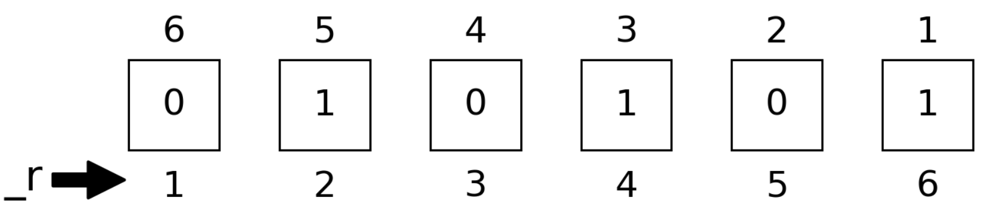

Bit strings
This package provides a string literal @bit_str to represent bit strings.
julia> b = bit"11100"11100 ₍₂₎julia> BitStr{5}(0b11100) # convert from integer11100 ₍₂₎julia> bit_literal(0, 0, 1, 1, 1) # from bit literals11100 ₍₂₎julia> [b...] # convert to a vector of bits5-element Vector{Int64}: 0 0 1 1 1julia> b[2] # indexing the 2nd bit0julia> b.buf # the storage type is `Int64` by default28julia> typeof(b)DitStr{2, 5, Int64}julia> bit_length(b) # the length of bit string5
The type of b is DitStr{2, 5, Int64}, which means it is a bit string with 5 bits and the storage type is Int64. The buf field is the integer representation of the bit string. Bit strings are represented as integers in the little-endian order, e.g. integer 28 represents the bit string 11100.
The bit_literal function uses the array order to represent the bit string, which is different from the bit string literal, i.e. the leftmost bit is the least significant bit in the bit_literal function.
To represent bit strings with more than 64 bits, one can specify the storage type as Int128 or BigInt.
julia> b = bit_literal(rand(BigInt[0, 1], 200)...)01101110101010000101010100010101111010110011100000110011101010110011110111100001101110100000111101110011110011110001011000111110000110001100001100010111110001110100101011011010110000010010010010111110 ₍₂₎julia> typeof(b)BitStr{200, BigInt} (alias for DitStr{2, 200, BigInt})
Dit Strings
A nary basis is a generalization of a binary basis by changing the base from 2 to n. . A dit string is a nary basis with a given base. The @dit_str string literal is used to represent dit strings. For example, to represent a dit string with base 3, one can use the following code.
julia> d = dit"12210;3"12210 ₍₃₎julia> typeof(d)DitStr64{3, 5} (alias for DitStr{3, 5, Int64})
The operations on dit strings are similar to those on bit strings.
Concatenation and Repetition
To concatenate and repeat bit strings, one can use join and repeat functions.
julia> join([bit"101" for i in 1:10]...) # concatenate bit strings101101101101101101101101101101 ₍₂₎julia> repeat(bit"101", 2) # repeat bit string101101 ₍₂₎
Readout
To readout bits, one can use readbit and baddrs functions.

julia> readbit(bit"11100", 2, 3) # read the 2nd and 3rd bits as `x₃x₂`00010 ₍₂₎julia> baddrs(bit"11100") # locations of one bits3-element Vector{Int64}: 3 4 5
A bit string can be read out as numbers in the following ways:
bint, the integer itselfbint_r, the integer with bits small-big end reflected.bfloat, the float point number $0.σ₁σ₂ \cdots σ_n$.bfloat_r, the float point number $0.σ_n \cdots σ₂σ₁$.
These functions are useful in quantum computing algorithms such as phase estimation and HHL.
julia> bint(bit"010101")21julia> bint_r(bit"010101")42julia> bfloat(bit"010101")0.65625julia> bfloat_r(bit"010101")0.328125
Modification
To flip all bits, one can use the neg function.
julia> neg(bit"1011") # flip all bits0100 ₍₂₎
To truncate bits, one can use the btruncate function.
julia> btruncate(bit"1011", 2) # only keep the first 2 qubits0011 ₍₂₎
To change the order of bits, one can use breflect function.
julia> breflect(bit"1011") # reflect little end and big end1101 ₍₂₎
Masked Operations
One can use bmask to generate a mask for bit strings, and then use the mask to perform operations like allone, anyone, ismatch, flip, setbit, swapbits, etc.
julia> mask = bmask(BitStr{4, Int}, 1,3,4) # mask bits 1, 3, 41101 ₍₂₎
By coloring the masked positions in light blue, we have

julia> allone(bit"1011", mask) # true if all masked positions are 1falsejulia> anyone(bit"1011", mask) # true if any masked positions is 1truejulia> ismatch(bit"1011", mask, bit"1001") # true if masked part matches `1001`truejulia> flip(bit"1011", mask) # flip masked positions: 1, 3, 40110 ₍₂₎julia> setbit(bit"1011", bit"1100") # set masked positions to 11111 ₍₂₎julia> swapbits(bit"1011", bit"1100") # swap masked positions0111 ₍₂₎
Hamming Distance
One can calculate the Hamming distance between two bit strings by bdistance function.
julia> bdistance(bit"11100", bit"10101") # Hamming distance2
Hilbert Space
The basis function is used to iterate over the basis of a given number of bits.
julia> itr = basis(BitStr{4, Int})0000 ₍₂₎:1111 ₍₂₎julia> collect(itr)16-element Vector{DitStr{2, 4, Int64}}: 0000 ₍₂₎ 0001 ₍₂₎ 0010 ₍₂₎ 0011 ₍₂₎ 0100 ₍₂₎ 0101 ₍₂₎ 0110 ₍₂₎ 0111 ₍₂₎ 1000 ₍₂₎ 1001 ₍₂₎ 1010 ₍₂₎ 1011 ₍₂₎ 1100 ₍₂₎ 1101 ₍₂₎ 1110 ₍₂₎ 1111 ₍₂₎
Iterating over basis in a controlled way plays an important role in quantum simulation. The itercontrol function is used to iterate over basis in a controlled way. For example, if we want to iterate over the basis of 7 qubits, and we only want to iterate over the basis with the 1st, 3rd, 4th, and 7th qubits being 1, 0, 1, and 0, respectively, we can use the following code.
julia> for each in itercontrol(7, [1, 3, 4, 7], (1, 0, 1, 0)) println(string(each, base=2, pad=7)) end0001001 0001011 0011001 0011011 0101001 0101011 0111001 0111011
julia> v = onehot(bit"11100") # the one hot vector representation of given bits32-element Vector{ComplexF64}: 0.0 + 0.0im 0.0 + 0.0im 0.0 + 0.0im 0.0 + 0.0im 0.0 + 0.0im 0.0 + 0.0im 0.0 + 0.0im 0.0 + 0.0im 0.0 + 0.0im 0.0 + 0.0im ⋮ 0.0 + 0.0im 0.0 + 0.0im 0.0 + 0.0im 0.0 + 0.0im 0.0 + 0.0im 1.0 + 0.0im 0.0 + 0.0im 0.0 + 0.0im 0.0 + 0.0imjulia> reorder(v, (3,2,1,5,4)) ≈ onehot(bit"11001") # change the order of bitstruejulia> invorder(v) ≈ onehot(bit"00111") # change the order of bitstrue
BitArray Utilities
Utilities are provided to cast between integers and the BitArray type in Julia standard library.
bitarray(integers, nbits), transform integers toBitArray.packabits(bitstring), transformBitArrayto integers.
julia> barr = bitarray(28, 5)5-element BitVector: 0 0 1 1 1julia> packbits(barr)28julia> barr_mult = bitarray([4, 5, 6], 5)5×3 BitMatrix: 0 1 0 0 0 1 1 1 1 0 0 0 0 0 0julia> packbits(barr_mult)3-element view(::Matrix{Int64}, 1, :) with eltype Int64: 4 5 6